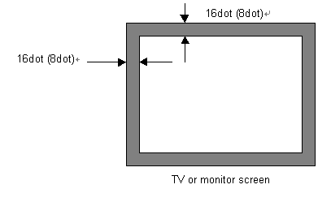

Dreamcast Software Development Standards/Ver. 2.00EU
 18.3.1 Arcade Stick Button Settings
18.3.1 Arcade Stick Button Settings
Required: Use the A and C Buttons as "Accept" buttons (perform operation), and the B Button as the "Cancel" button (reject operation).
Allocation of "Accept" and "Cancel" to the respective A and B buttons is assumed, but that doesn't not mean the B Button must be removed from key configuration when the accept key is defined by pressing the button to allocate keys in key configuration.
Recommended: Give priority to the A, B, and C buttons over X, Y, and Z.
 18.3.2 Arcade Stick Soft Reset Button Operation
18.3.2 Arcade Stick Soft Reset Button Operation
 18.4.1 Racing Controller Button Settings
18.4.1 Racing Controller Button Settings
Allocation of "Accept" and "Cancel" to the respective A and B buttons is assumed, but that doesn't not mean the B Button must be removed from key configuration when the accept key is defined by pressing the button to allocate keys in key configuration.
 18.4.2 Racing Controller Soft Reset Button Operation
18.4.2 Racing Controller Soft Reset Button Operation
Refer to the section 10.5 Compatibility with Old TV's (Sync Interval Compatibility) and 10.6 Persistent White Display when supporting the gun controller in an application.
 18.5.1 Gun Controller Button Settings
18.5.1 Gun Controller Button Settings
Allocation of "Accept" and "Cancel" to the respective A and B buttons is assumed, but that doesn't not mean the B Button must be removed from key configuration when the accept key is defined by pressing the button to allocate keys in key configuration.
 18.5.2 Gun Controller Soft Reset Button Operation
18.5.2 Gun Controller Soft Reset Button Operation
 18.5.3 Calibration Mode
18.5.3 Calibration Mode
Standardized: Contents of the calibration mode
1. On a bright background (in the case of white, at least 0x50), only one target is placed in the center of the screen.
2. When the user aims at the target, a flash goes off in the center of the screen. Using that as a standard, offset is added from the gun controller data.
3. Another flash goes off in the center of the screen for the same target aimed at by the user. This time the flash confirms the position.
4. If there are no problems, calibration finishes. Calibration is only repeated to do the same work as above for the gun controller connected in a port.
 18.5.4 Valid Range
18.5.4 Valid Range

 18.5.5 Gun Controller Supported Games for the U.S.A.
18.5.5 Gun Controller Supported Games for the U.S.A.
"This is not a gun controller (use the American product name) sold for use in the United States. Please use a commercially approved gun controller."
In the United States, the federal government has declared that there are limitations on the colors of toys that resemble guns.
This measure is effected to prevent the importation of real guns alongside the toys from other sales regions by gray importers.The relationship of sales regions for Dreamcast Gun and gun peripheral target-area codes are as follows:
Site Code for Japan sales global for North America sales North America for Europe sales global
 18.6 Tsuri (Fishing) Controller
18.6 Tsuri (Fishing) Controller
 18.6.1 Tsuri Controller Button Settings
18.6.1 Tsuri Controller Button Settings
Allocation of "Accept" and "Cancel" to the respective A and B buttons is assumed, but that doesn't not mean the B Button must be removed from key configuration when the accept key is defined by pressing the button to allocate keys in key configuration.
 18.6.2 Tsuri Controller Soft Reset Button Operation
18.6.2 Tsuri Controller Soft Reset Button Operation
 18.6.3 Vibration Peripheral within the Tsuri Controller
18.6.3 Vibration Peripheral within the Tsuri Controller
When using the vibration peripheral in the tsuri controller, observe the rules outlined in 18.1 Vibration Peripheral (Product Name Puru Puru Pack).
Twin stick specifications are unavailable at this time, but will be supported from the next version.
 18.8.1 Note on Simultaneous Use of the Mike Device and the Vibration Peripheral
18.8.1 Note on Simultaneous Use of the Mike Device and the Vibration Peripheral
This is because the sound recognition rate decreases due to the noise of vibration when vibration is done during sound input.

Copyright SEGA ENTERPRISES, LTD., 1998,1999 and Sega Europe 1999